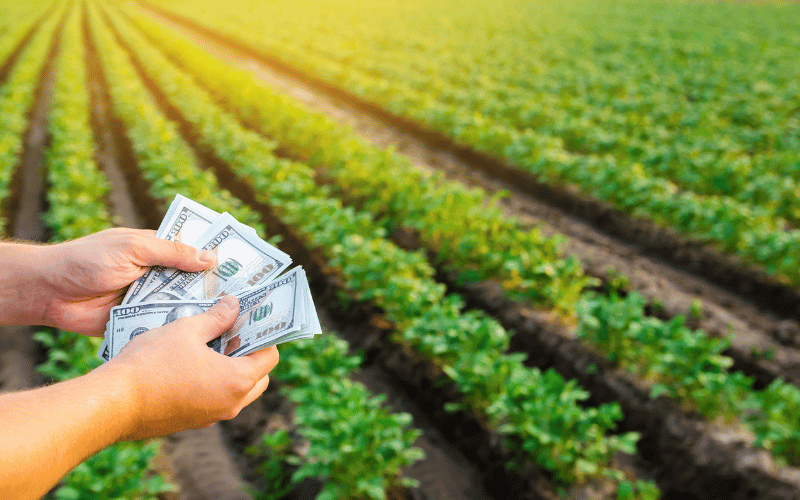

O que é produção no agronegócio?
A produção no agronegócio envolve todas as etapas da cadeia produtiva agrícola e pecuária, desde o preparo do solo, plantio e manejo, até a colheita e comercialização. No Brasil, o setor é responsável por uma grande parte do PIB e gera milhões de empregos diretos e indiretos.

Importância para o Brasil
O Brasil é um dos maiores exportadores de alimentos do mundo. A produção agrícola é essencial para a economia nacional, garantindo segurança alimentar, geração de renda e incentivo à pesquisa e inovação tecnológica no campo. Sem tiver fome não tem humanidade.

Desafios e sustentabilidade
O agronegócio enfrenta desafios como o uso racional da água, eficiência energética e preservação ambiental. Práticas sustentáveis e tecnologias modernas são fundamentais para manter a produtividade sem comprometer os recursos naturais.